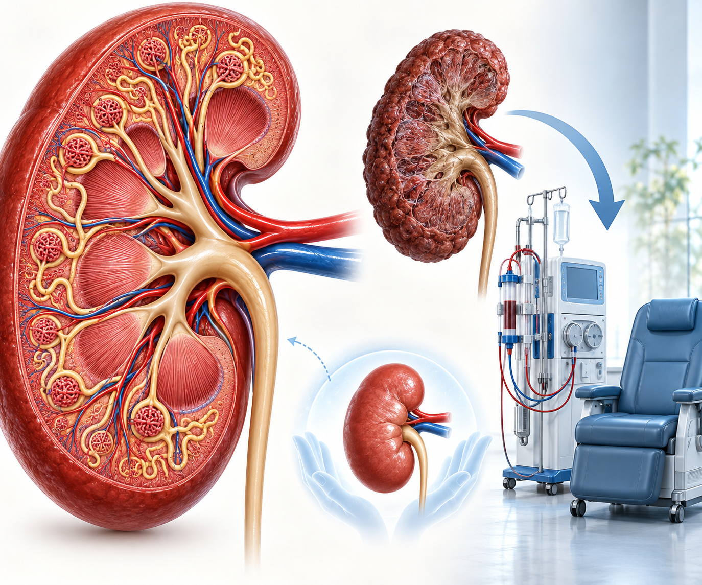
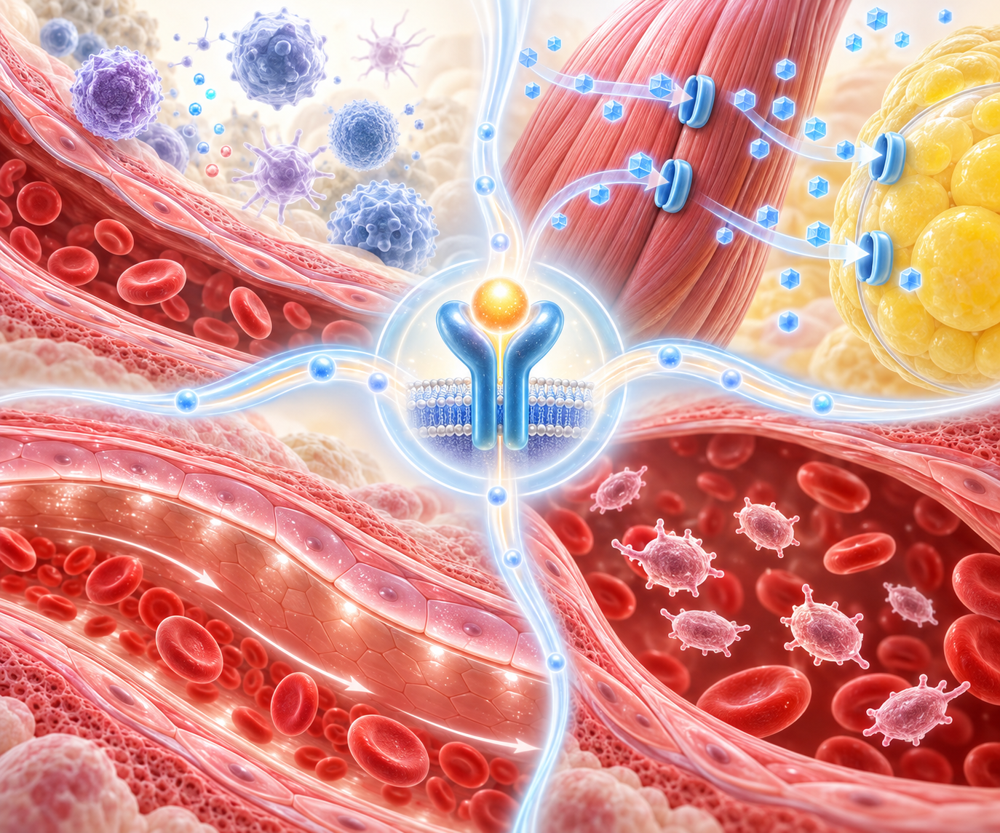

PAPER REVIEW · ENDOCRINOLOGY · CARDIORENAL
제1형 당뇨병에서 GLP-1RA,
심혈관·신장 사건 감소
Nature Medicine 2026 · Johns Hopkins 연구진 target trial emulation. 제1형 당뇨병 174,678명에서 5년 MACE 15%, ESKD 19% 감소. 적응증 외 사용은 DKA·저혈당 모니터링 전제.
제2형 중심이던 GLP-1RA 심신장 보호 신호가 제1형 당뇨병 실제 진료 자료에서도 관찰됐습니다
인슐린만으로 해결되지 않는 체중·인슐린저항·심혈관·신장 위험이 평생 쌓입니다
Sequential target trial emulation — immortal time bias 와 기저 불균형을 줄이는 방법입니다
절대차는 작지만 제1형의 긴 생애 위험을 생각하면 누적 의미가 큰 신호입니다
| 결과 | 효과 | 추정치 · 출처 |
|---|---|---|
| MACE 5년 위험 | −15% | 4.3% vs 5.0% · HR 0.85 (0.77–0.95) |
| 위험차 | −0.7%p | 95% CI −1.2 ~ −0.2%p |
| 심근경색 | −21% | Johns Hopkins 보도자료 요약 |
| 전체 사망 | −16% | 이차 구성요소 신호 |
투석·신장이식으로 이어지는 단단한 신장 결과에서도 감소 신호가 있었습니다

심신장 신호만 따로 튄 것이 아니라 대사·장기 보호 방향이 함께 움직였습니다
| 이차 결과 | 효과 | 메모 |
|---|---|---|
| 심부전 입원 | HR 0.82 | 심부전 입원 위험 감소와 연관 |
| 중대 간질환 | HR 0.72 | 비대상성 간경변·간세포암·간이식 등을 포함 |
| 5%·10%·15% 체중감량 달성 | +14–25% | 감량 목표에 닿을 가능성이 더 높았습니다 |
| 10% 이상 체중감량 | +22% | Johns Hopkins 요약 기준 |
| 연령·HbA1c 하위군 | 방향 유지 | 탐색적 하위군 분석 — 확증 아님 |
| 개별 약제 비교 | 불가 | 세마글루타이드·티르제파타이드 등 약제별 우열은 말할 수 없음 |
제1형에서 가장 중요한 안전성 질문 — 다만 신중한 선택과 모니터링을 전제로 읽습니다
저자들이 논의한 기전 — 여러 경로가 함께 작동한다는 해석(제안 단계)입니다

“바로 적응증”이 아니라 “신중한 후보를 골라 상담할 근거”로 씁니다
Real-world target trial emulation 은 강한 관찰연구지만 RCT 를 대체하지 않습니다
| 한계 | 무엇을 뜻하나 |
|---|---|
| 잔여 교란 | 건강행동·의료 접근성·처방 이유 같은 측정되지 않은 교란이 남을 수 있습니다 |
| 제1형 오분류 | 검증된 알고리즘을 썼지만 제1형/제2형 구분 오류를 완전히 배제할 수 없습니다 |
| DKA·저혈당 포착 | 입원 사례만 포착 — 외래·자가처치 수준 사건은 반영되지 않았을 수 있습니다 |
| 인슐린 용량 정보 | 시작 후 인슐린 감량 패턴과 안전성의 관계를 직접 평가하기 어렵습니다 |
| 개별 약제 비교 | 세마글루타이드·티르제파타이드·리라글루타이드 등 약제별 우열 판단 불가 |
| 다음 단계 | 저자 결론도 확증 RCT 가 필요하다는 것 — 지금은 유망한 근거 단계입니다 |
제1형 당뇨병 GLP-1RA 적응증 외 상담의 균형점
QR을 스캔하면 같은 자료를 휴대폰에서 다시 열 수 있습니다